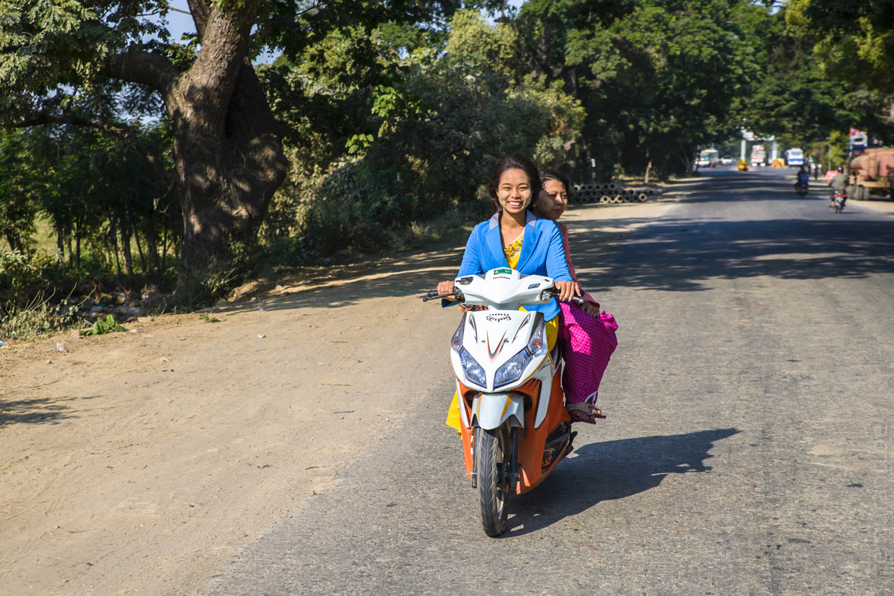
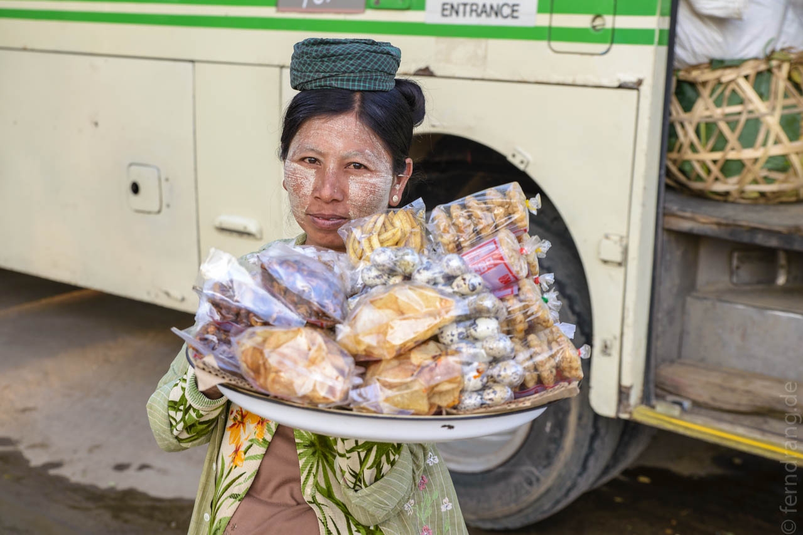
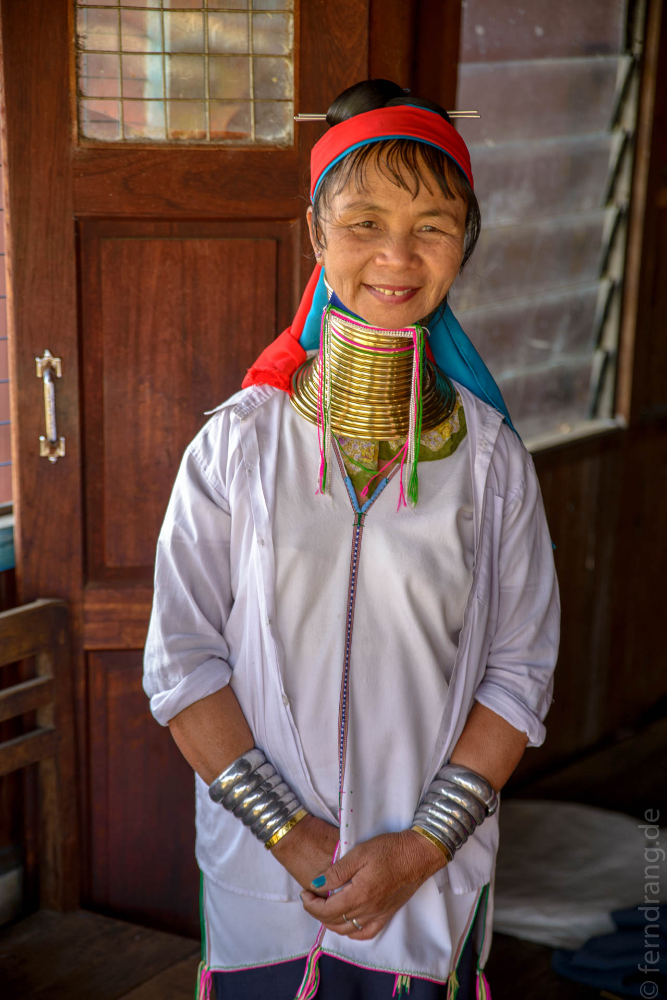
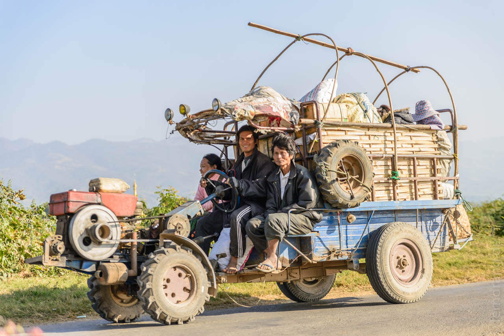
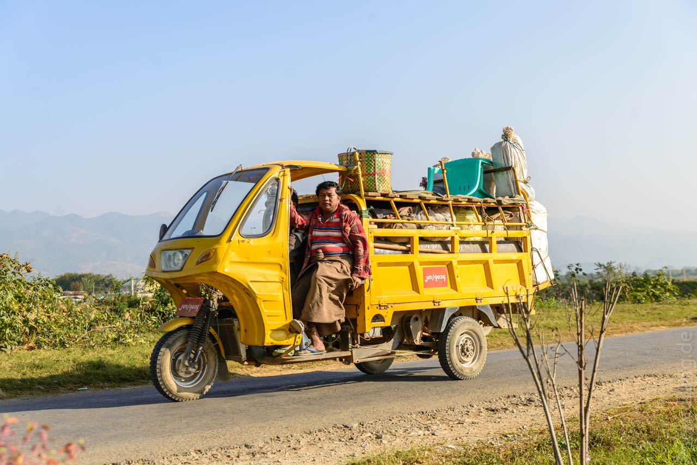
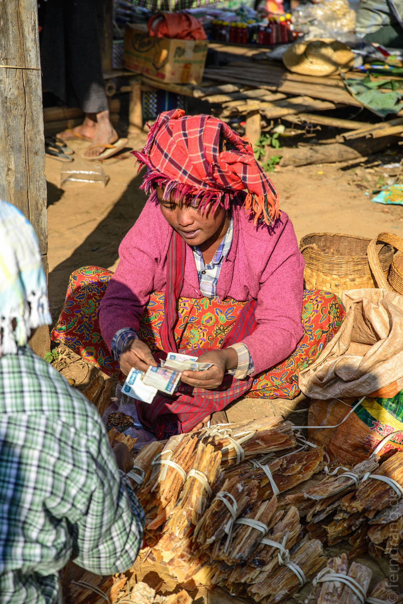
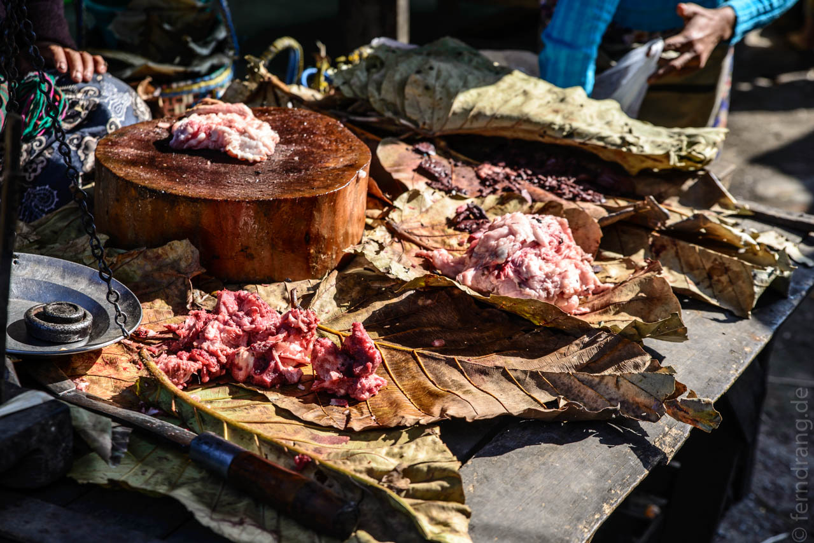
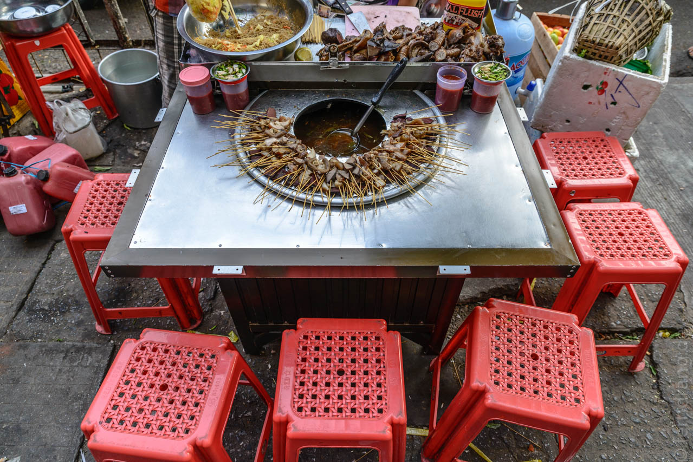
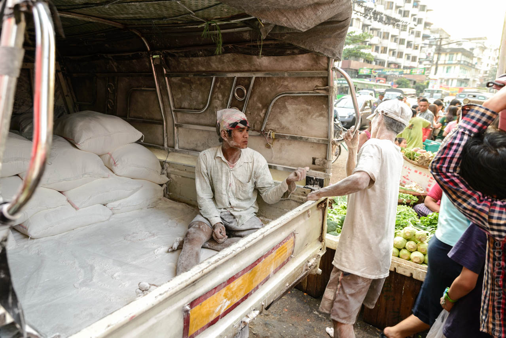

01. Januar 2014
Myanmar – Land und Leute
MINGALABA!! Myanmar kann sich der nettesten Begrüßungsformel der Welt rühmen. Man schmettert sie sich wie einen Segen zu jeder Gelegenheit entgegen. Das macht richtig Spaß. Da verwundert es nicht, dass die Myanmaresen (Nennt man sie so? Nur "Burmesen" wäre falsch) einen so netten Eindruck machen. Das ist fast schon ein Vorurteil, aber es stimmt wirklich. Auf dem Land winken Jung und Alt den Fremden zu.
  Auch in der Stadt, wo manches moderner zugeht, trifft man auf viel Herzlichkeit und Hilfsbereitschaft. Wenn der Reifen mal lehr ist, hilft die Werkstatt gerne aus und will auch kein Trinkgeld, sondern freut sich über ein holpriges "Dschesutschinbahde" (Danke). In Yangon hatten wir gerade unseren Mut an einem der vielen Fressstände bewiesen, als uns ein alter Herr direkt Taschentücher angeboten hat, weil er gesehen hat, dass wir bei der Verköstigung der klebrigen Speise etwas ungeschickt zugange waren.
Myanmar vermittelt auch ein sehr sicheres Gefühl. Zwar werden die Bürgersteige schon schnell nach Einbruch der Dunkelheit hochgeklappt, aber nie wirkt es bedrohlich oder auch nur unangenehm. Wären die dunklen und nebligen Straßen Mandalays in Südamerika gelegen, hätten wir sie bestimmt nur vom Taxi aus gesehen.
Obwohl viele Sammeltaxis von der Marke "Steel fighter" sind, ist der Verkehr eigentlich recht kooperativ. Mit großem Wohlwollen konnten wir feststellen, dass hier gern und viel geblinkt wird. An den hiesigen Kreuzungen wird auch die höchste Form, das Geradeaus-Blinken mit dem Notblinker, praktiziert. Man gewinnt den Eindruck, dass den meisten Verkehrsteilnehmern nicht nur an der Unversehrtheit des eigenen Fahrzeugs, sondern auch am überleben aller Beteiligten gelegen ist. Unter Zuhilfenahme einer Menge existenziellen "Ich bin hier"-Hupens gelingt das auch mit gutem Erfolg. Vermutlich ist das Fahren ohne Versicherung einfach ein super Anreiz für vorausschauendes Fahren.
 Die Regierung hat den Straßenverkehr vor einigen Jahren gehörig aufgepeppt, als das Land quasi über Nacht von Links- auf Rechtsverkehr umgestellt wurde. Die Autos haben sich aber nicht mit verändert und haben noch größtenteils das Steuer rechts. Das macht Überholmanöver etwas interessanter, weil der Fahrer den Gegenverkehr erst sehen kann, wenn er schon auf der anderen Spur ist.
Der Norden Myanmars wirkt gar nicht südostasiatisch sondern eher zentralasiatisch. Die Menschen sind wegen der kalten Nächte oft in Pullover, Anoraks und Mäntel gehüllt. Die dunklen Gesichter und dreckigen Kinder könnten indisch oder sogar tibetisch sein. Vor allem der Entwicklungsstand ist nicht mit dem Nachbarn Thailand zu vergleichen.
 Hier wird zwar auch viel Curry gekocht, aber weder indisch noch thailändisch, sondern nach eigener Art, die relativ dünn, sehr ölig und in der Regel nicht scharf ist. Es gibt viel heimisches Gemüse, das in vielen kleinen Schälchen zu Reis aufgetischt wird. Kellner mit Blickkontakt oder Winken auf sich aufmerksam machen zu wollen, ist oft ein Zeit raubendes Unterfangen. Der lokale Trick ist lautes Schmatzen – das bringt jeden Kellner in der Umgebung sofort auf die Beine. Auf der Straße werden in kleinen öfen Samusas frittiert, die als Snack oder zum Tee gegessen werden.
Der myanmarischen Tee wird wie Chai in Indien mit viel gesüßter Kondensmilch getrunken. Die vielen Teestuben sind dafür ideal. Manchmal ist es nur ein Topf über einem Feuer und ein paar Plastikhocker unter einem Baum oder es sind richtige Buden, wo der Gast eine Weile ablungern kann. Witzigerweise steht auf jedem Tisch immer auch eine Kanne normalen Tees, an der man sich frei bedienen kann. Ein Fernseher verleitet dazu, lange zu bleiben und immer mehr zu trinken. Wenn Manchester United spielt, wird es rappelvoll.
Ebenfalls indisch ist das weit verbreitete Betelkauen. überall findet man kleine Stände an den Straßen, wo die Nüsse mit einer weißen Kalk-Creme in Blätter gestrichen wird. Daher ist das Land auch mit roten Flecken übersäht, denn überall wird gespuckt. Angespuckt zu werden ist auch die dringendste Gefahr im Straßenverkehr. Man sollte sich nicht unbemerkt neben das offene Fenster eines Taxifahrers schleichen. Die allgemeine Zahnsituation leidet auch unter diesem Hobby, das bestenfalls zu einem blutig-roten Lächeln und meistens zu einer Menge freistehender Zähne führt.
Süd-Myanmar wirkt wiederum südostasiatisch, was vermutlich auch wieder am Wetter liegt. Hier ist es tags und nachts schön warm und niemand trägt mehr als der Anstand verlangt, was auf einen Longyi und T-Shirt hinaus läuft. Die allgegenwärtigen Tuktuks machen vor den Toren Yangons halt, wo sich dank Motorrad- und Hupverbot eine moderne Aura über den im tropischen Klima verschimmelten Mauern der Stadt breit macht. Hier sieht man auch deutlich mehr Hosen, sogar bei Frauen.
Eine weitere lustige Eigenart Yangons sind die Wohnungsschnüre. In den Straßen mit höheren Gebäuden hängt aus jedem Stockwerk eine lange Schnur bis in Greifweite auf den Bürgersteig. Am unteren Ende ist ein Clip befestigt, an dem manchmal Post, manchmal Werbung oder eine Tüte mit Essen festgemacht und hochgezogen wird. Oben ist oft ein Glöckchen dran, mit dem man klingeln kann. Vermutlich sind Aufzüge und Gegensprechanlagen nicht sehr weit verbreitet. Diesen charmanten Hang zum Pragmatismus trifft man überall in Myanmar an, wo eine Lösung gefragt ist, aber Geld wie so oft Mangelware ist.